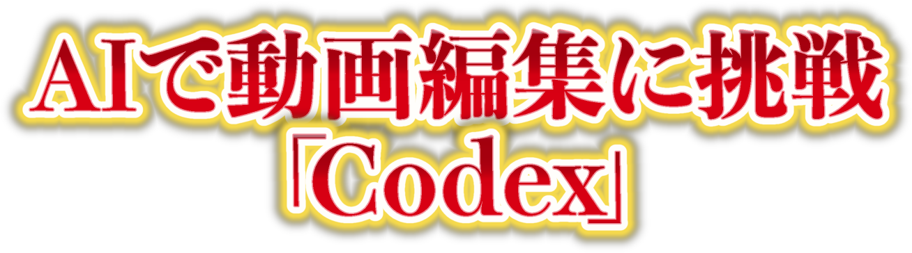
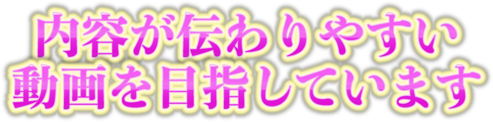
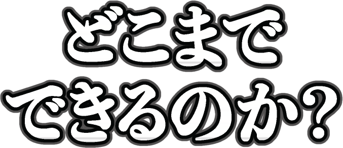
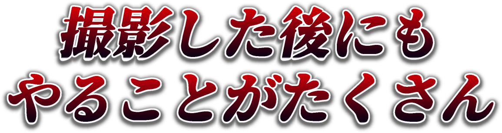
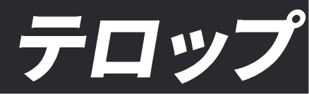

平常flat
落ち着いて話を追ってほしい
- 使いどころ
- 説明やつなぎの文。気持ちを動かす必要がないところ
- テロップ
- 黒70%帯+細め白ゴシック(小)
- 配置
- 下中央・黒70%の帯
- 登場の動き
- カット(即表示)
- 効果音
- なし
- 映像の扱い
- 動かさない
感情 = その瞬間に、視聴者にどういう気持ちになってほしいか。台本の1文に感情を1つ選ぶと、テロップ・登場の動き・効果音・映像の扱いが1セットで決まります。各カードの動画は、人物をダミーに置き換えたサンプルでの実例です(音なし)。効果音は、効果音ラボの素材名と素材ページへのリンクを載せています。
flat落ち着いて話を追ってほしい
excite「おっ」と前のめりになってほしい

trust「それなら任せられる」と信じてほしい
relief「自分にもできそう」「良くなりそう」と思ってほしい

curious「どうなんだろう」と続きを気にしてほしい

anxiety「それ、困るよね」と自分ごとにしてほしい

burden「そんなにあるのか」と重さを感じてほしい
clarity「なるほど、整理できた」と思ってほしい

proof「本当にやったんだ」と受け止めてほしい
chapter「ここから話が変わる」と気持ちを切り替えてほしい